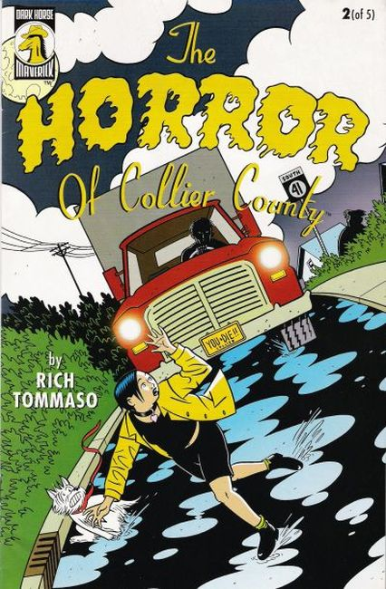
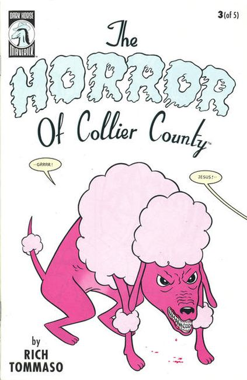
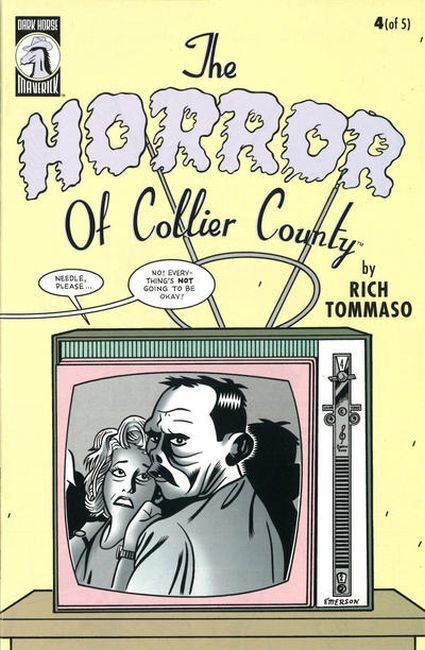
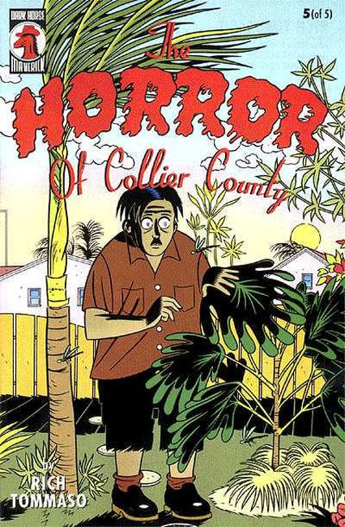

Welcome to Paradise Falls. A sleepy retirement village nestled in southern Florida, it seems perfect. Fran thought the scariest thing she'd encounter was her mother, but there's a greater evil hiding behind the peaceful façade. Alligators, stalkers, and nosy neighbors all play a part in making Fran paranoid. The only question is: is she paranoid enough? Clover Honey creator Rich Tommaso joins the Maverick lineup with the first chapter of this creepy new thriller just in time for Halloween! You'll never look at retirees the same way again!

Things seem to be going from bad to worse in Paradise Falls, at least as far as Fran is concerned. She's nearly run over by a truck, discovers she has a stalker, and can't find anything to eat in her mom's kitchen. She can't take much more. But, on the plus side, she has met Mel, the only (relatively) normal person in town. So maybe things are looking up. But then again, what is that on the front porch? Rich Tommaso delivers another chapter in his atmospheric-but-funny new thriller that is not to be missed.

What do young socialites do in a retirement village? They steer clearof the retirees, that's what! In this third chapter from Clover Honeycreator, Rich Tommaso, gothic acquaintances Fran and Mel delve deeper into the strangeness of the middle class, finding that poodles are vicious animals and that suburbia is perhaps a breeding ground for the subhuman!

Why does Fran sleep with a butcher knife? What happens when a New York hipster moves to a small community in Florida? Bandages, crutches, pain pills, and terror-just another day in Collier County! Clover Honey creator Rich Tommaso will keep you on the edge of your seat in this penultimate chapter to his five-issue series. Be there or be square for "The Return Of Day Of The Dumb!"

What's a girl to do when confronted by hoards of zombies in suburban Florida? Hit them with a weed whacker, of course! Once again Fran finds herself in the hospital after another furious fight with the creepy neighbors, but this time she escapes the paralyzing horrors of Naples for the comforting environs of New York City. Away from the terror of alligator country, will Fran finally be free?